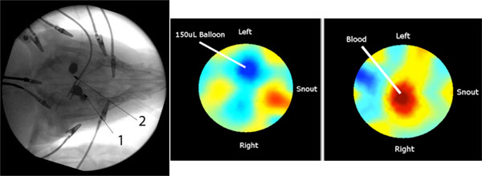

Electrical Impedance-based Imaging of Brain Compliance in an Animal Model
With funds from the National Institutes of Health and the National Institute of Biomedical Imaging and Bioengineering, we are developing a novel real-time imaging modality to monitor the evolution of brain injury over an extended period of time in order to optimize outcomes. Physical limitations of current technology prevent those suffering from traumatic brain injury (TBI) from being carefully monitored in order to quickly detect and treat swelling or hemorrhage.
Currently, surgically implanted intracranial pressure (ICP) sensing measures global pressure trends to indicate a worsening status. Spikes in these trends indicate adverse events, however, the results are shown later than nominally desired. Other systems used to detect parameters in determining patient brain health, such as external blood pressure monitors and existing imaging systems, have also proven at times to be unreliable, difficult to conduct, limiting, expensive or put a patient at risk.
We are in the process of developing and validating a real-time electrical impedance tomography (EIT) system for use in imaging and monitoring patients with TBI. We hypothesize that the difference in the electrical impedance between intracranial fluids (blood and cerebral spinal fluid) and the soft tissues of the brain, as estimated by high-speed EIT, will enable monitoring of blood perfusion and injury progression over extended periods of time and provide spatial information, localizing regions of clinical concern. Furthermore, the correlation of EIT and implanted intracranial pressure data should enable estimation of intracranial compliance — a better indicator of tissue stiffness and early onset of edema.

The left image shows an X-ray of the cranium of a swine model used for these experiments. Circumferential electrodes are placed on the scalp (see the alligator clips) and a central electrode is placed intracranially (see centrally located clip, Arrow 1). A Fogarty catheter and balloon are introduced through the skull for manipulating the intracranial environment (Arrow 2). Impedance measurements are recorded from all electrode combinations and conductivity images are computed. Right panels show conductivity images following inflation of the 150 microL Fogarty balloon (left) and injection of a 1 mL bolus of blood into the cranial space through the Fogarty catheter (right). The lower conductivity balloon results in an obvious decrease in conductivity (blue region), while the higher conductivity blood results in an obvious increase in conductivity (red region).